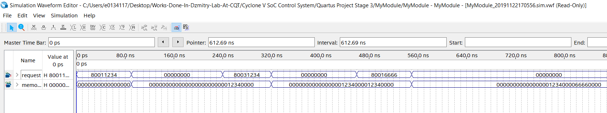

Verilog MemoryMapper¶
- Date
11 Oct 2019
module MemoryMapper(
input [31:0] request,
output [127:0] memory);
reg [15:0] memArray [0:7];
assign memory={memArray[7],memArray[6],memArray[5],memArray[4],
memArray[3],memArray[2],memArray[1],memArray[0]};
wire newData; wire [14:0] address; wire [15:0] data;
assign {newData,address,data}=request;
always@(negedge newData) memArray[address]<=data;
endmodule
// use *negedge* because the value of `address` is the one before negedge!
// request format MUST be:
// - start writing: set newData HIGH
// - finish writing: set newData LOW
